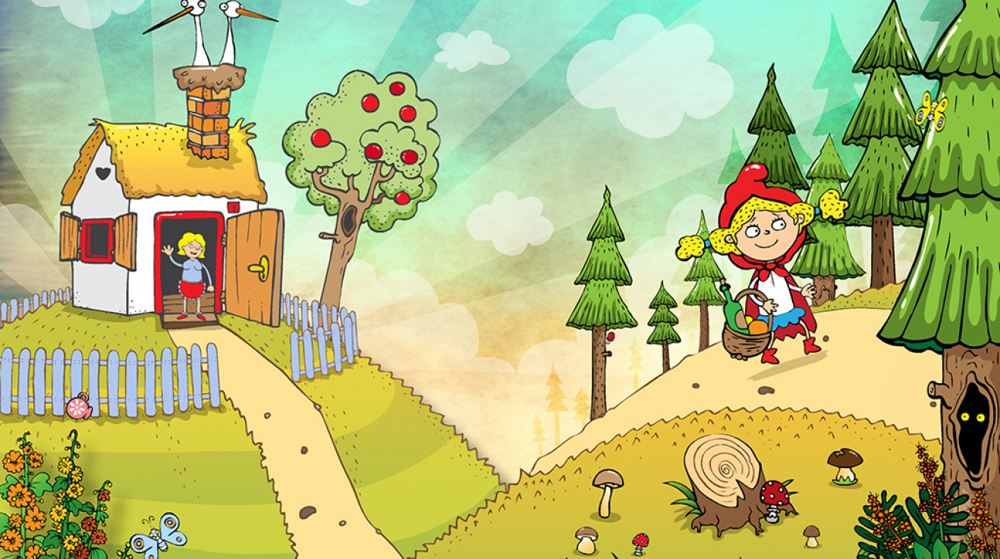

Červená karkulka je pohádka o setkání mladé dívky s vlkem. Tento příběh se během své historie velmi měnil a stal se předlohou pro značné množství moderních adaptací. Nejstarší psaná verze pochází z pera Charlese Perraulta, dnes asi nejrozšířenější verze je založena na zpracování bratří Grimmů.
